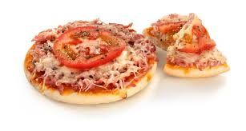
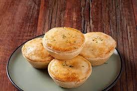

Bolo de Chocolate
Ingredientes
- 3 ovos
- 1 xícara de açúcar
- 1/2 xícara de óleo
- 1 xícara de leite
- 2 xícaras de farinha de trigo
- 1/2 xícara de cacau em pó
- 1 colher de sopa de fermento
Modo de Preparo
- Preaqueça o forno a 180°C.
- Bata ovos, açúcar e óleo até homogeneizar.
- Adicione leite, farinha, cacau e misture.
- Incorpore fermento e asse por 35-40min.

Minipizza
Ingredientes
- 1 xícara de farinha de trigo
- 1/2 xícara de água morna
- 1 colher de sopa de óleo
- 1 pitada de sal
- Molho, queijo e orégano
Modo de Preparo
- Misture massa com água, óleo e sal.
- Modele minipizzas, adicione molho e queijo.
- Asse a 180°C por 15-20min.

Empada
Ingredientes
- 2 xícaras de farinha
- 100g manteiga
- 1 ovo
- Sal a gosto
- Recheio a gosto
Modo de Preparo
- Misture massa com manteiga, ovo e sal.
- Modele forminhas e adicione recheio.
- Asse a 180°C por 25-30min.

Bolo de Fubá
Ingredientes
- 3 ovos
- 1 xícara de açúcar
- 1/2 xícara de óleo
- 1 xícara de leite
- 1 xícara de fubá
- 1 xícara de farinha
- 1 colher de sopa fermento
Modo de Preparo
- Bata ovos, açúcar e óleo.
- Adicione leite, fubá e farinha.
- Incorpore fermento e asse a 180°C por 35-40min.

Pipoca de Leite Ninho
Ingredientes
- 1/2 xícara de milho
- 3 colheres de óleo
- 1/2 xícara de açúcar
- 1/2 xícara de leite em pó
- 1 colher de manteiga
Modo de Preparo
- Estoure o milho no óleo.
- Adicione manteiga e açúcar.
- Finalize com leite Ninho.

Pão Caseiro Simples
Ingredientes
- 3 xícaras farinha
- 1 xícara água morna
- 1 colher açúcar
- 1 colher sal
- 1 colher óleo
- 10g fermento seco
Modo de Preparo
- Ative o fermento na água com açúcar.
- Adicione óleo, sal e farinha.
- Sove, deixe crescer e asse a 200°C por 25-35min.